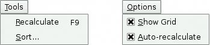
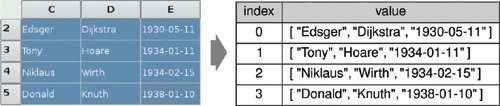
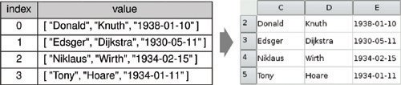

Implementing the Other MenusWe will now implement the slots for the Tools and Options menus. Figure 4.7. The Spreadsheet application's Tools and Options menus
void Spreadsheet::recalculate()
{
for (int row = 0; row < RowCount; ++row) {
for (int column = 0; column < ColumnCount; ++column) {
if (cell(row, column))
cell(row, column)->setDirty();
}
}
viewport()->update();
}
The recalculate() slot corresponds to Tools|Recalculate. It is also called automatically by Spreadsheet when necessary. We iterate over all the cells and call setDirty() on every cell to mark each one as requiring recalculation. The next time QTableWidget calls text() on a Cell to obtain the value to show in the spreadsheet, the value will be recalculated. Then we call update() on the viewport to repaint the whole spreadsheet. The repaint code in QTableWidget then calls text() on each visible cell to obtain the value to display. Because we called setDirty() on every cell, the calls to text() will use a freshly calculated value. The calculation may require non-visible cells to be recalculated, cascading the calculation until every cell that needs to be recalculated to display the correct text in the viewport has been freshly calculated. The calculation is performed by the Cell class.
void Spreadsheet::setAutoRecalculate(bool recalc)
{
autoRecalc = recalc;
if (autoRecalc)
recalculate();
}
The setAutoRecalculate() slot corresponds to Options|Auto-Recalculate. If the feature is being turned on, we recalculate the whole spreadsheet immediately to make sure that it's up to date; afterward, recalculate() is called automatically from somethingChanged(). We don't need to implement anything for Options|Show Grid because QTableWidget already has a setShowGrid() slot, which it inherits from its base class QTable-View. All that remains is Spreadsheet::sort(), which is called from MainWindow::sort():
void Spreadsheet::sort(const SpreadsheetCompare &compare)
{
QList<QStringList> rows;
QTableWidgetSelectionRange range = selectedRange();
int i;
for (i = 0; i < range.rowCount(); ++i) {
QStringList row;
for (int j = 0; j < range.columnCount(); ++j)
row.append(formula(range.topRow() + i,
range.leftColumn() + j));
rows.append(row);
}
qStableSort(rows.begin(), rows.end(), compare);
for (i = 0; i < range.rowCount(); ++i) {
for (int j = 0; j < range.columnCount(); ++j)
setFormula(range.topRow() + i, range.leftColumn() + j,
rows[i][j]);
}
clearSelection();
somethingChanged();
}
Sorting operates on the current selection and reorders the rows according to the sort keys and sort orders stored in the compare object. We represent each row of data with a QStringList and store the selection as a list of rows. We use Qt's qStableSort() algorithm, and for simplicity sort by formula rather than by value. Qt's standard algorithms and data structures are covered in Chapter 11 (Container Classes). Figure 4.8. Storing the selection as a list of rowsThe qStableSort() function accepts a begin iterator, an end iterator, and a comparison function. The comparison function is a function that takes two arguments (two QStringLists) and that returns true if the first argument is "less than" the second argument, false otherwise. The compare object we pass as the comparison function isn't really a function, but it can be used as one, as we will see shortly. Figure 4.9. Putting the data back into the table after sortingAfter performing the qStableSort(), we move the data back into the table, clear the selection, and call somethingChanged(). In spreadsheet.h, the SpreadsheetCompare class was defined like this:
class SpreadsheetCompare
{
public:
bool operator()(const QStringList &row1,
const QStringList &row2) const;
enum { KeyCount = 3 };
int keys[KeyCount];
bool ascending[KeyCount];
};
The SpreadsheetCompare class is special because it implements a () operator. This allows us to use the class as if it were a function. Such classes are called function objects, or functors. To understand how functors work, we will start with a simple example:
class Square
{
public:
int operator()(int x) const { return x * x; }
}
The Square class provides one function, operator()(int), that returns the square of its parameter. By naming the function operator()(int) rather than, say, compute(int), we gain the capability of using an object of type Square as if it were a function: Square square; int y = square(5); Now let's see an example involving SpreadsheetCompare:
QStringList row1, row2;
QSpreadsheetCompare compare;
...
if (compare(row1, row2)) {
// row1 is less than row2
}
The compare object can be used just as if it had been a plain compare() function. Additionally, its implementation can access all the sort keys and sort orders, which are stored as member variables. An alternative to this scheme would have been to store the sort keys and sort orders in global variables and use a plain compare() function. However, communicating through global variables is inelegant and can lead to subtle bugs. Functors are a more powerful idiom for interfacing with template functions such as qStableSort(). Here is the implementation of the function that is used to compare two spreadsheet rows:
bool SpreadsheetCompare::operator()(const QStringList &row1,
const QStringList &row2) const
{
for (int i = 0; i < KeyCount; ++i) {
int column = keys[i];
if (column != -1) {
if (row1[column] != row2[column]) {
if (ascending[i]) {
return row1[column] < row2[column];
} else {
return row1[column] > row2[column];
}
}
}
}
return false;
}
The operator returns TRue if the first row is less than the second row; otherwise, it returns false. The qStableSort() function uses the result of this function to perform the sort. The SpreadsheetCompare object's keys and ascending arrays are populated in the MainWindow::sort() function (shown in Chapter 2). Each key holds a column index, or -1 ("None"). We compare the corresponding cell entries in the two rows for each key in order. As soon as we find a difference, we return an appropriate true or false value. If all the comparisons turn out to be equal, we return false. The qStableSort() function uses the order before the sort to resolve tie situations; if row1 preceded row2 originally and neither compares as "less than" the other, row1 will still precede row2 in the result. This is what distinguishes qStableSort() from its unstable cousin qSort(). We have now completed the Spreadsheet class. In the next section, we will review the Cell class. This class is used to hold cell formulas and provides a reimplementation of the QTableWidgetItem::data() function that Spreadsheet calls indirectly, through the QTableWidgetItem::text() function, to display the result of calculating a cell's formula. |